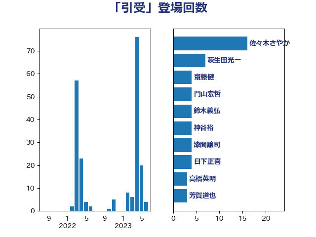

単語「引受」

| 佐々木さやか | 公明党 | 16 回 |
| 萩生田光一 | 自由民主党 | 7 回 |
| 齋藤健 | 自由民主党 | 4 回 |
| 門山宏哲 | 自由民主党 | 4 回 |
| 鈴木義弘 | 国民民主党 | 4 回 |
| 神谷裕 | 立憲民主党 | 4 回 |
| 漆間譲司 | 日本維新の会 | 4 回 |
| 日下正喜 | 公明党 | 4 回 |
| 高橋英明 | 日本維新の会 | 3 回 |
| 芳賀道也 | 国民民主党 | 3 回 |
| 笠井亮 | 日本共産党 | 3 回 |
| 沢田良 | 日本維新の会 | 3 回 |
| 本村伸子 | 日本共産党 | 3 回 |
| 斉藤鉄夫 | 公明党 | 3 回 |
| 徳永エリ | 立憲民主党 | 3 回 |
| 山田勝彦 | 立憲民主党 | 3 回 |
| 山下貴司 | 自由民主党 | 3 回 |
| 小野泰輔 | 日本維新の会 | 3 回 |
| 古川禎久 | 自由民主党 | 3 回 |
| 友納理緒 | 自由民主党 | 3 回 |
| 野村哲郎 | 自由民主党 | 2 回 |
| 谷合正明 | 公明党 | 2 回 |
| 緑川貴士 | 立憲民主党 | 2 回 |
| 滝波宏文 | 自由民主党 | 2 回 |
| 川合孝典 | 国民民主党 | 2 回 |
| 岩渕友 | 日本共産党 | 2 回 |
| 伊藤岳 | 日本共産党 | 2 回 |
| 中野洋昌 | 公明党 | 2 回 |
| 鬼木誠 | 立憲民主党 | 1 回 |
| 高橋はるみ | 自由民主党 | 1 回 |
| 青山繁晴 | 自由民主党 | 1 回 |
| 阿部司 | 日本維新の会 | 1 回 |
| 長谷川英晴 | 自由民主党 | 1 回 |
| 鎌田さゆり | 立憲民主党 | 1 回 |
| 西村康稔 | 自由民主党 | 1 回 |
| 武部新 | 自由民主党 | 1 回 |
| 梅村聡 | 日本維新の会 | 1 回 |
| 梅村みずほ | 日本維新の会 | 1 回 |
| 岡田克也 | 立憲民主党 | 1 回 |
| 山口壯 | 自由民主党 | 1 回 |
| 小寺裕雄 | 自由民主党 | 1 回 |
| 安江伸夫 | 公明党 | 1 回 |
| 大塚耕平 | 国民民主党 | 1 回 |
| 大口善徳 | 公明党 | 1 回 |
| 塩村あやか | 立憲民主党 | 1 回 |
| 国光あやの | 自由民主党 | 1 回 |
| 吉田宣弘 | 公明党 | 1 回 |
| 吉田はるみ | 立憲民主党 | 1 回 |
| 前原誠司 | 国民民主党 | 1 回 |
| 中谷一馬 | 立憲民主党 | 1 回 |
| 中川貴元 | 自由民主党 | 1 回 |
| 中川宏昌 | 公明党 | 1 回 |